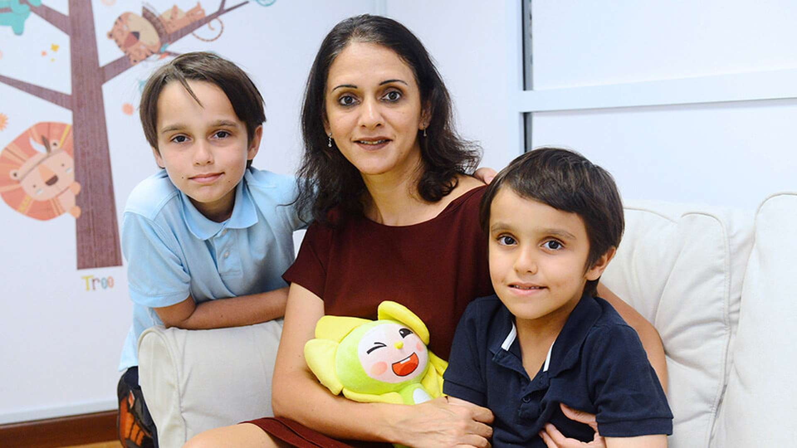

NUS Infant and Child Language Centre
Home
In the News
Publications
Our Team
Parent Information
Frequently Asked Questions
To participate!
Directions/Contact Us
In the News

We were recently featured in several newspaper articles. Read about us in the news!
A study reveals bilinguals exhibit significant gray and white matter changes especially in frontal and cingulate areas enhancing language processing and executive control.
Read more:
🧩 The neuroanatomical consequences and pathological implications…
July 2022, Nature
Infants can distinguish languages early on, with evidence showing that bilingual and monolingual infants both significantly benefit from infant-directed speech.
Read more:
👶 The Science of Language Learning in Infants (Nature)
How Bilingualism Affects Brain Structure
December 2022 — Neuropsychologia reveals structural brain changes linked to improved language processing in bilinguals.
Read more:
🧩 The neuroanatomical consequences and pathological implications…
November 2022, The Atlantic
— The Atlantic emphasizes how parental involvement can boost bilingual language development.
Read more:
👨👩👧👦 The Role of Parents in Bilingual Education
Alternative Related Article:
“Letter: Bilingual Education Should Be Available to All Children,” discussing socioeconomic equity in bilingual education.
Read here:
🏫 Bilingual Education Should Be Available to All Children
October 2022 – Frontiers in Psychology
A study suggests bilingual kids often exhibit stronger emotional intelligence—especially empathy and emotion recognition.
Read more:
🧩 Bilingualism and Emotional Intelligence: Teaching Empathy Across Languages
December 2022 – Frontiers in Psychology
Research reviews broad cognitive and emotional benefits of bilingualism.
Read more:
📘 The effects of bilingualism on cognition and behaviour in individuals with attention deficits
2022 – PMC Study
Examines how social‑pragmatic skills and inhibitory control contribute to emotional and executive development in bilinguals.
Read more:
👥 Social-Pragmatic Skills and Length of Bilingualism Predict Inhibitory Control
2 Sep 2014 Bilingually exposed babies show better memory and learning at 6 months (The Straits Times)
31 Jul 2014 Start language learning from the cradle (NUS homepage, translated text from Lianhe Zaobao)